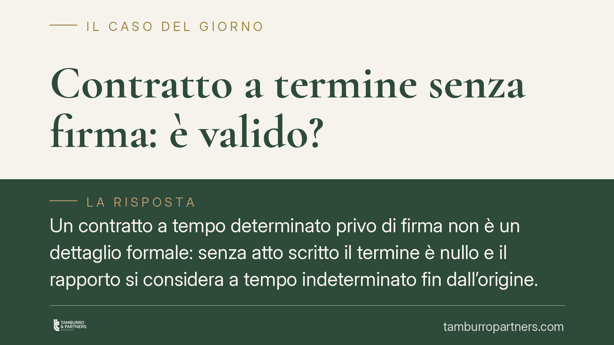

Contratto a termine senza firma: è valido?
Un contratto a tempo determinato privo di firma non è un dettaglio formale: senza atto scritto il termine è nullo e il rapporto si considera a tempo indeterminato fin dall'origine. Il modello UniLav trasmesso al centro per l'impiego non sostituisce il contratto sottoscritto. Vediamo cosa prevede la legge, quali sono i termini per agire e come muoversi.

Il caso
Capita più spesso di quanto si creda: il lavoratore inizia a prestare attività sulla base di accordi verbali, l'azienda trasmette la comunicazione obbligatoria di assunzione (il cosiddetto UniLav), ma il contratto cartaceo con l'indicazione del termine non viene mai firmato, oppure viene firmato giorni dopo l'inizio del lavoro.
La domanda è semplice: quel termine regge? La risposta della legge è altrettanto netta.
Inquadramento normativo
L'art. 19, comma 4, del D.lgs. 81/2015 stabilisce che l'apposizione del termine al contratto di lavoro richiede la forma scritta, a pena di nullità. La firma deve essere anteriore o contemporanea all'inizio della prestazione.
Si tratta di una forma scritta cosiddetta *ad substantiam*: non è una formalità di prova, ma un elemento costitutivo. Senza atto scritto, la clausola che fissa la scadenza semplicemente non esiste sul piano giuridico. La conseguenza, prevista dalla stessa norma, è che il rapporto si considera a tempo indeterminato fin dal primo giorno.
La stessa disposizione introduce un'unica eccezione: la forma scritta non è richiesta per i rapporti di durata non superiore a dodici giorni (art. 19, comma 4, D.lgs. 81/2015). Al di fuori di questo caso limite, la regola non ammette deroghe.
UniLav e contratto: due documenti diversi
Un equivoco ricorrente riguarda la comunicazione obbligatoria. Il modello UniLav è l'adempimento amministrativo con cui il datore comunica l'assunzione agli enti competenti. Assolve a una funzione di trasparenza verso la pubblica amministrazione, ma non è il contratto e non reca la volontà sottoscritta delle parti sul termine.
In altre parole: l'UniLav può indicare una data di fine rapporto, ma se manca il contratto firmato quel termine resta privo di base valida. La comunicazione amministrativa non sana l'assenza della forma scritta richiesta dall'art. 19.
Implicazioni pratiche
Per il lavoratore significa che, in assenza di contratto sottoscritto nei termini di legge, può far valere la natura a tempo indeterminato del rapporto. L'azienda, dal canto suo, perde la possibilità di cessare il rapporto alla scadenza indicata: dovrà procedere, se del caso, con un licenziamento soggetto alle tutele ordinarie.
Attenzione però ai tempi. L'azione non è senza scadenze. L'art. 28 del D.lgs. 81/2015 richiama il regime di decadenza dell'art. 6 della L. 604/1966: il lavoratore deve impugnare il contratto in via stragiudiziale entro 180 giorni dalla cessazione del rapporto, e successivamente depositare il ricorso giudiziale (o avviare il tentativo di conciliazione/arbitrato) entro gli ulteriori 180 giorni. Scaduti questi termini, il diritto di far valere la nullità del termine si perde. *(Le cifre vanno sempre verificate alla luce delle eventuali modifiche normative in vigore alla data dell'azione.)*
Quanto alle conseguenze economiche, in caso di conversione il giudice riconosce al lavoratore un'indennità risarcitoria onnicomprensiva compresa tra 2,5 e 12 mensilità dell'ultima retribuzione di riferimento per il calcolo del TFR, secondo l'art. 28 del D.lgs. 81/2015. Questa indennità copre il periodo che va dalla scadenza del termine fino alla sentenza, a ristoro del danno.
Cosa fare in concreto
Se sei il datore di lavoro:
- Fai firmare il contratto con l'indicazione del termine prima o contestualmente all'inizio della prestazione, mai dopo.
- Conserva l'originale sottoscritto da entrambe le parti: l'UniLav non basta.
- Verifica che la causale (quando richiesta) e la scadenza siano indicate in modo chiaro e completo.
Se sei il lavoratore:
- Conserva ogni documento che attesti data di inizio e modalità del rapporto (badge, email, buste paga, UniLav).
- Rispetta i termini di decadenza: non lasciar passare i 180 giorni dalla cessazione senza impugnare per iscritto.
In sintesi
La forma scritta, qui, non è un formalismo. È la condizione stessa di validità del termine. Un contratto a tempo determinato non firmato nei tempi di legge è, agli occhi dell'ordinamento, un contratto a tempo indeterminato.
---
Contributo informativo a cura di Tamburro & Partners Avvocati - Avv. Giuseppe Tamburro. Non costituisce parere legale.
Ogni storia di lavoro ha i suoi tempi.
Se gestisci HR e vuoi un confronto su contenzioso, ispezioni o licenziamenti, scrivi allo studio. Ti rispondiamo entro un giorno lavorativo.